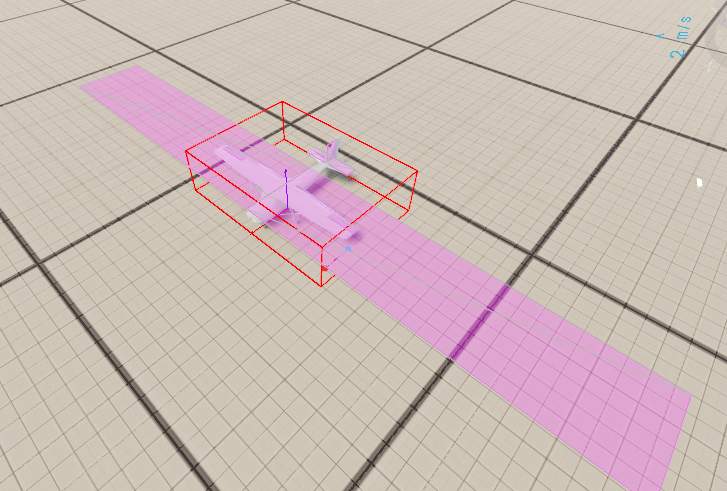

Building a Variant¶
PFC is meant to be a base. To make your own propeller aircraft, depend on the core and build a prefab the same way the Cessna does, then add only the systems your aircraft needs.
1. Add PFC as a dependency¶
In your mod's addon.gproj, add the PFC GUID to Dependencies:
Dependencies {
"69A8A34027DA65C5" // Propeller flight core
// ...the base game dependency is pulled in transitively
}
This makes all PFC_* classes and the merged input actions available to your mod.
2. Create the aircraft prefab¶
Create a prefab inheriting Wheeled_Base.et and add the core components (mirror the
Cessna setup):
MeshObject→ your aircraft model.PFC_FlightController- tune the slew rates /m_fGroundSteerScalefor your airframe.PFC_FlightModel- set engine count/thrust, then define your aero surfaces inm_aSurfaceDefs.PFC_FreeLookController- plusForcedFreeLook 1on the pilot compartment slot, for the helicopter-style cockpit camera (see Input & Controls).
3. Lay out the aero surfaces¶
Place a PFC_AeroSurfaceDef for each lifting/control surface. Start from the Cessna values and scale to your
aircraft:
- Main wing -
m_iControlAxis NONE,m_bMirror 1, setm_fAspectRatioOverrideto the real wing AR. - Ailerons -
AILERON,m_bMirror 1, out near the wingtips (large X) for roll authority. - Elevator -
ELEVATOR,m_bMirror 1, well aft (large −Z) for pitch authority. - Rudder -
RUDDER,m_bMirror 0,m_vRotation 0 0 90(vertical surface), aft. - Fuselage side -
NONE, vertical, low lift slope + low efficiency, for yaw/side damping.
Tune with debug draw on
Enable F6 → Prop Flight → Debug draw (or set m_bDebugDraw) to see each surface's position, extent,
and live force vector. Use Setup approach to jump straight to altitude and test handling.

4. Add your own systems on top¶
The core deliberately stops at flight. Anything else is a component you add to your prefab - for example:
- Gear / flap / trim controllers that drive their own surfaces or animation variables.
- A start sequence, fuel, or systems controller (the core's engine is always on).
- Cockpit instruments / a custom HUD reading the instrument signals.
- Cargo, weapons, lights, etc.
Follow the core's networking patterns when you do: owner-authoritative changes via RPC, and guard per-tick RPCs / MP-signal writes on a valid Rpl id (see Networking & MP).
Extending the flight model itself¶
If your aircraft needs different physics — not just extra systems — do not copy or modded class the
core. Subclass it and override the variant hooks:
class MyJet_FlightModelClass : PFC_FlightModelClass {}
class MyJet_FlightModel : PFC_FlightModel
{
override float ComputeThrustMagnitude(float speed, float airDensity, bool destroyed)
{
// altitude thrust lapse on top of the base behaviour
float thrust = super.ComputeThrustMagnitude(speed, airDensity, destroyed);
return thrust * Math.Pow(airDensity / m_fAirDensitySeaLevel, 0.85);
}
}
Your prefab then uses MyJet_FlightModel in place of PFC_FlightModel (a subclass inherits all attributes,
so existing prefab tuning carries over — you can even swap the class name on an existing component and keep
its values). The same pattern works for the controller: MyJet_FlightController : PFC_FlightController.
- Every hook's base implementation reproduces the stock prop behaviour, so override only what you change.
- New control axes:
modded enum PFC_ControlAxis { MY_AXIS }+ handle it in aGetSurfaceDeflectionoverride. Surfaces with an axis nobody handles simply stay undriven. OnAeroSimulate()runs at the end of each authoritative sim tick — the place for extra forces/torques (buffet, rate dampers) or bookkeeping. It runs on the owner and the server, so gate any MP-signal writes on ownership + a valid Rpl id, same as the core does.
Jet Flight Core
The canonical hook consumer is the Jet Flight Core mod (JFC_, GUID 69E6A3583D0123DF): turbojet
spool lag + idle residual thrust + altitude lapse (UpdateEngineSpool/ComputeThrustMagnitude),
transonic drag rise + airbrake (GetFuselageDragArea), high-IAS control stiffening + G-limiter + an
AIRBRAKE axis (GetSurfaceDeflection), rotational-flow damping (GetSurfaceAirVelocityLS), and
q-scaled SAS rate dampers + stall buffet (OnAeroSimulate). Jets depend on JFC instead of PFC directly.
Why subclass and not modded class?
A modded class PFC_FlightModel injects your behaviour into every PFC aircraft in the session,
including other mods' planes. Subclassing keeps your physics opt-in per prefab. Reserve modded class
for adding small variant-side accessors (the trim-hook pattern), never for changing core behaviour.
5. Wire control hints (optional)¶
If you add actions, extend Configs/ControlHints/AvailableActions.conf - and remember the
resource-merge rule applies to both the input config and the control-hints config (see
Input & Controls).